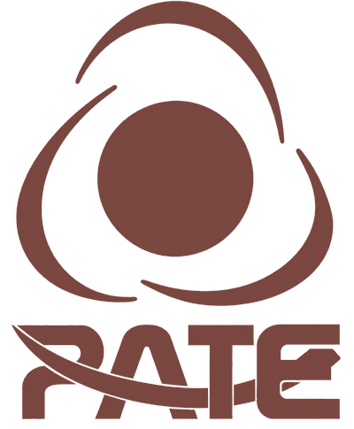

Estudio estadístico · EE05 · Pilar O3, S2
Productividad de deshuese (kg/hh)
Pilares O3, S2. Programado para el mar 13-oct-2026.
Estudio programado para el mar 13-oct-2026 (Leonardo Pimentel). Se construye con las bases BD07, BD12; los indicadores se publican al recibir la información de PATE.
Indicadores del estudio
K501 · Productividad de deshuese
Pendiente
kg/hh · Benchmark: Sin benchmark externo; se compara contra el propio histórico de PATE
K502 · Rendimiento de deshuese sobre canal
Pendiente
% de canal · Benchmark: 18.6-20.3 % del peso vivo (Suiza · comp. A)
K503 · Carne residual en armazón
Pendiente
g/armazón · Benchmark: Sin benchmark externo; se compara contra el propio histórico de PATE
K508 · Dispersión de rendimiento entre mesas/operadores
Pendiente
pp / kg/hh · Benchmark: Sin benchmark externo; se compara contra el propio histórico de PATE
K1108 · Curva de aprendizaje en deshuese
Pendiente
semanas · Benchmark: Sin benchmark externo; se compara contra el propio histórico de PATE
Método de análisis
Kg/hh y rendimiento por mesa/operador; dispersión P25-P75; kg recuperables al nivelar a P75; curva de aprendizaje por antigüedad.
Bases de datos
| Base | Contenido | Área PATE | Estado |
|---|---|---|---|
| BD07 | Rendimiento y productividad de deshuese por mesa / operador | Deshuese, pastas y empaque · Nómina | Pendiente · entrega vie 09-oct-2026 |
| BD12 | Plantilla por área y movimientos de personal | RR.HH. · Nómina | Pendiente · entrega vie 09-oct-2026 |
Hipótesis que valida
| ID | Hipótesis | Análisis |
|---|---|---|
| H04 | El rendimiento de carne varía significativamente entre operadores, mesas y turnos; nivelar al cuartil superior interno libera kg sin materia prima adicional. | Dispersión P25-P75; kg recuperables si P<75 sube a P75 (a peso vivo constante) |
| H15 | Rotación y ausentismo en deshuese reducen productividad por la curva de aprendizaje. | Curva de aprendizaje; costo de rotación |
Resultados
Pendiente. Aquí van las gráficas y tablas del estudio, con fuente, periodo y número de registros analizados.